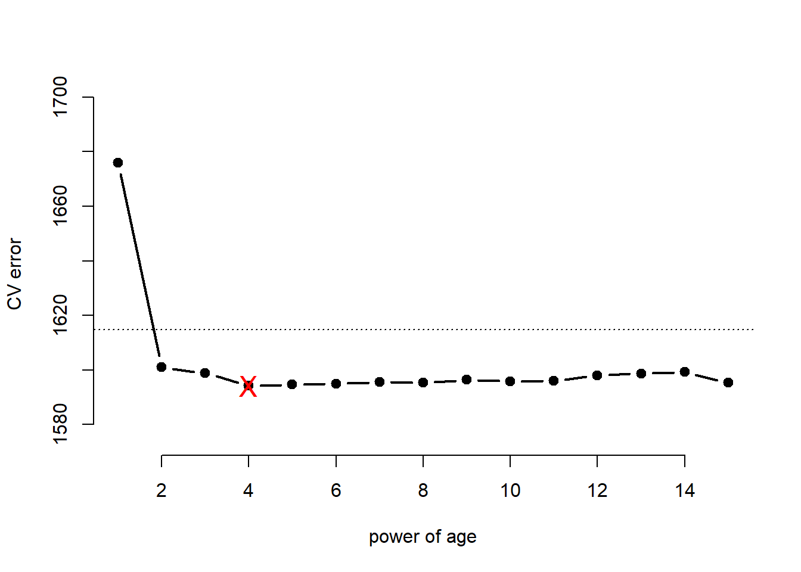
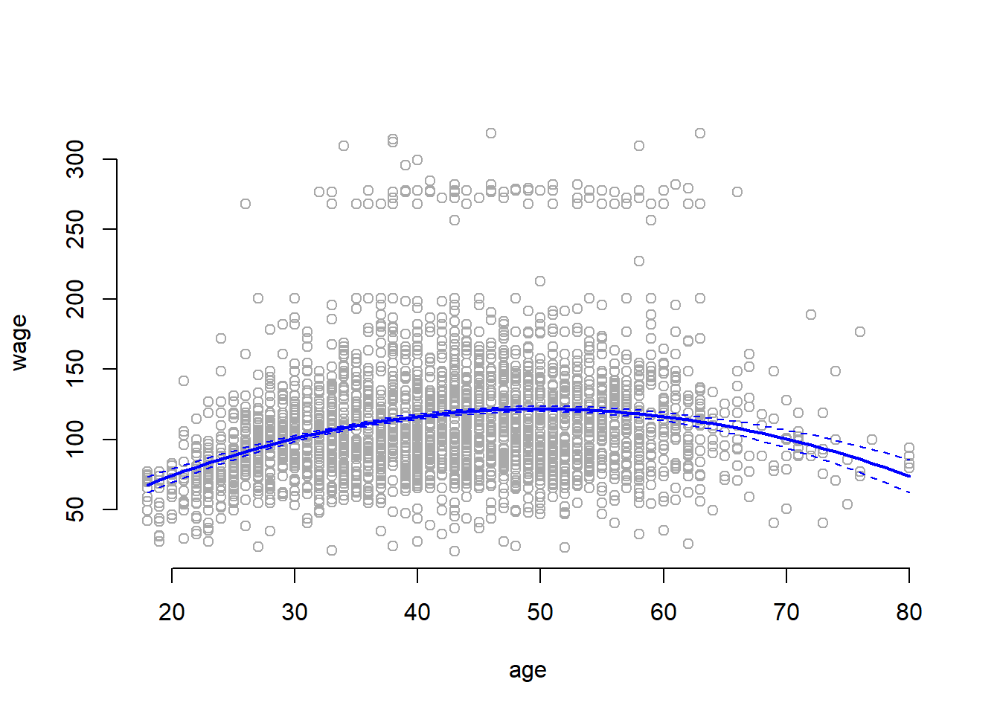
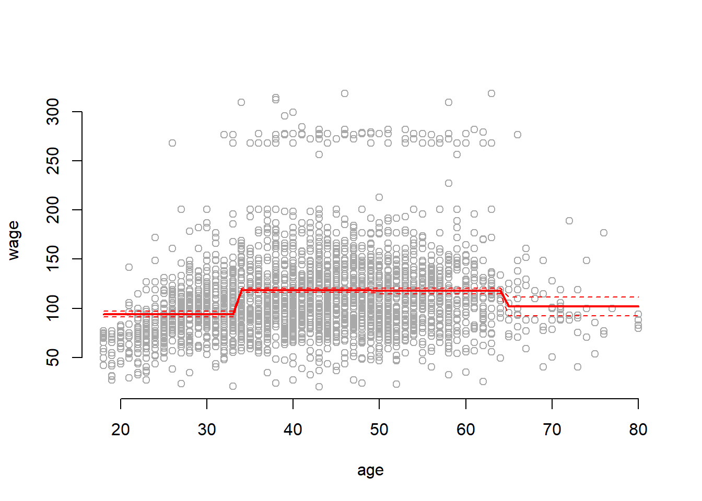
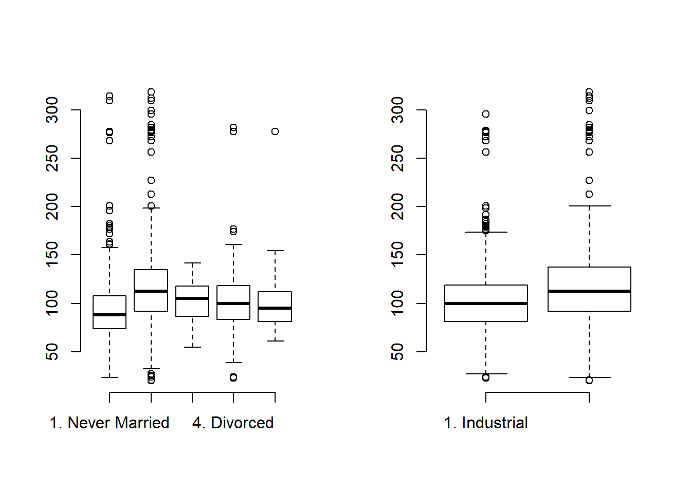
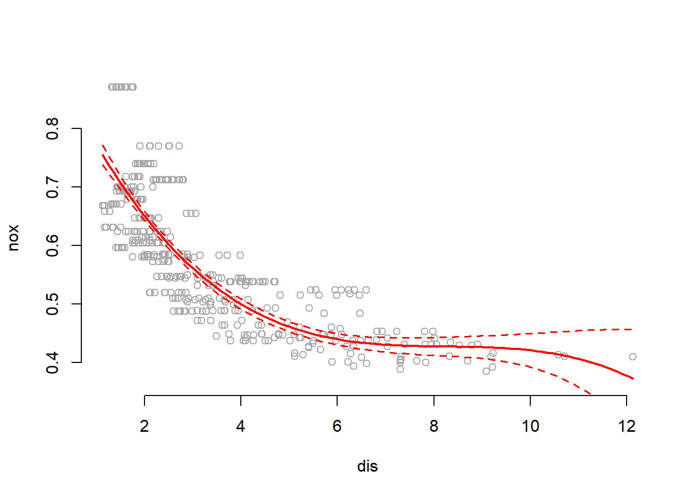
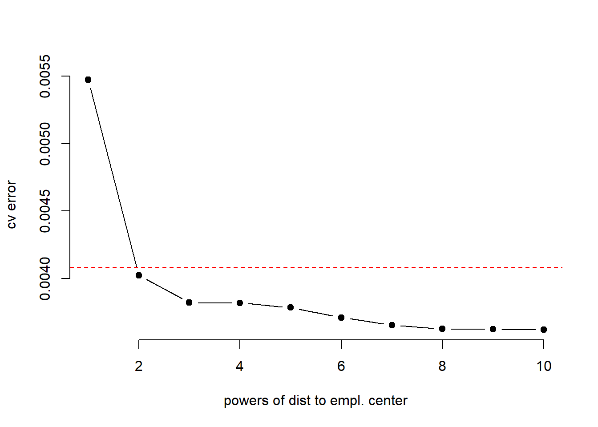
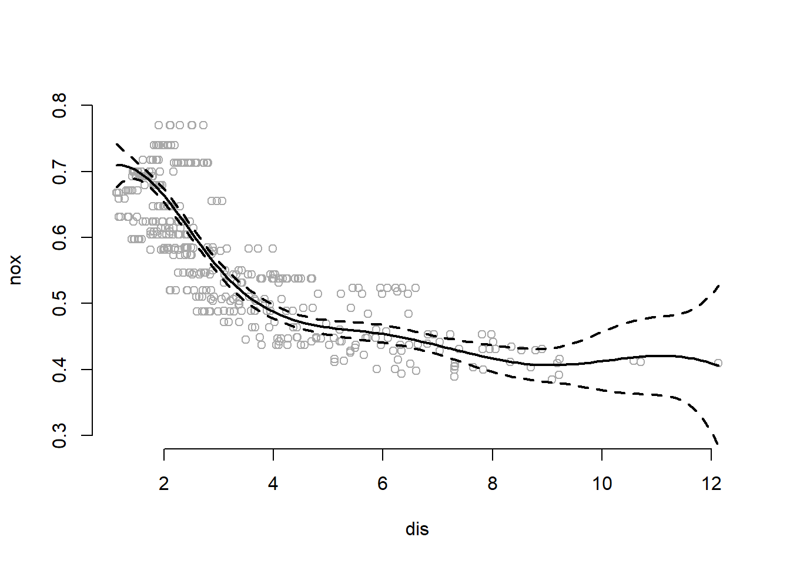
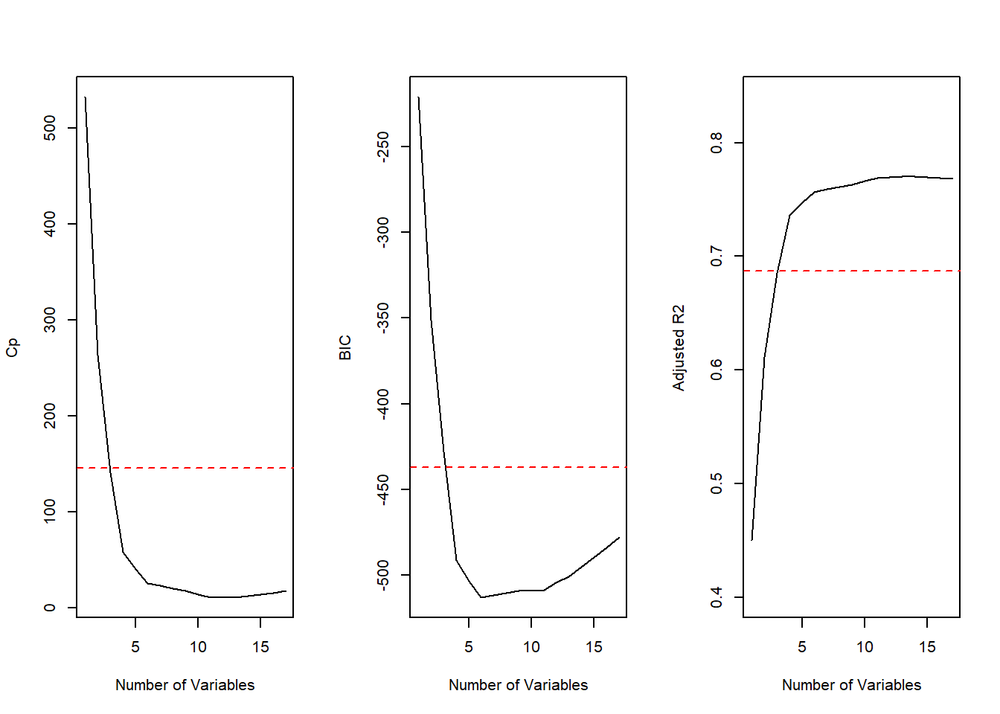
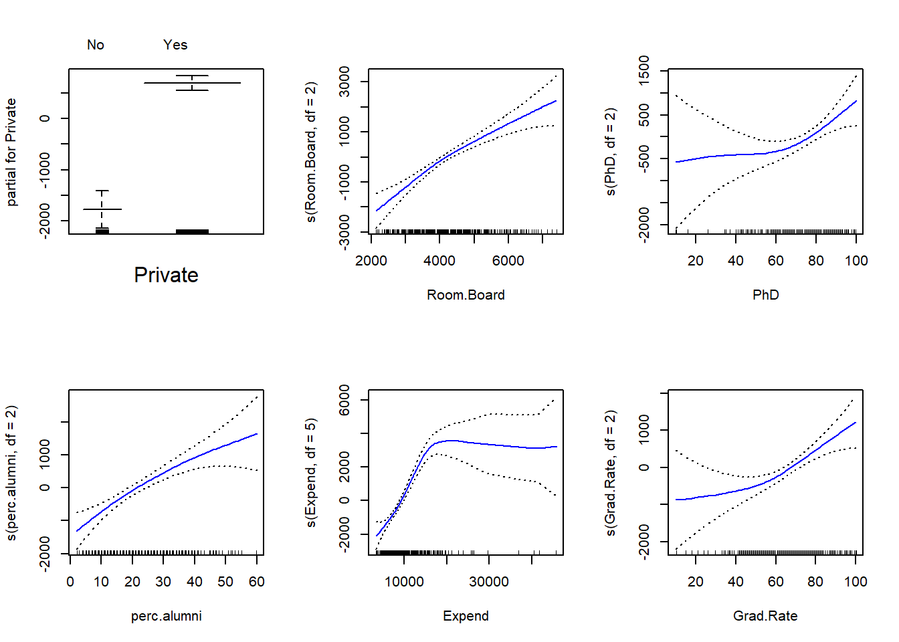

Solution Day 7 – Polynomial Regression
Philipp Broniecki and Lucas Leemann – Machine Learning 1K
Q1
In this exercise, you will further analyze the Wage dataset coming with the ISLR package.
- Perform polynomial regression to predict
wageusingage. Use cross-validation to select the optimal degree for the polynomial. What degree was chosen, and how does this compare to the results of hypothesis testing usingANOVA? Make a plot of the resulting polynomial fit to the data.
Load Wage dataset. Keep an array of all cross-validation errors. We are performing K-fold cross validation with \(K=10\).
rm(list = ls())
set.seed(1)
library(ISLR)## Warning: package 'ISLR' was built under R version 3.4.1library(boot)
# container of test errors
cv.MSE <- NA
# loop over powers of age
for (i in 1:15) {
glm.fit <- glm(wage ~ poly(age, i), data = Wage)
# we use cv.glm's cross-validation and keep the vanilla cv test error
cv.MSE[i] <- cv.glm(Wage, glm.fit, K = 10)$delta[1]
}
# inspect results object
cv.MSE## [1] 1675.837 1601.012 1598.801 1594.217 1594.625 1594.888 1595.500
## [8] 1595.436 1596.335 1595.835 1595.970 1597.971 1598.713 1599.253
## [15] 1595.332We illustrate the results with a plot of type = "b" where dots are drawn connected by lines. We set the limits of the y-axis automatically as the maximum/minimum cross-validation errors \(\pm 1sd\).
# illustrate results with a line plot connecting the cv.error dots
plot( x = 1:15, y = cv.MSE, xlab = "power of age", ylab = "CV error",
type = "b", pch = 19, lwd = 2, bty = "n",
ylim = c( min(cv.MSE) - sd(cv.MSE), max(cv.MSE) + sd(cv.MSE) ) )
# horizontal line for 1se to less complexity
abline(h = min(cv.MSE) + sd(cv.MSE) , lty = "dotted")
# where is the minimum
points( x = which.min(cv.MSE), y = min(cv.MSE), col = "red", pch = "X", cex = 1.5 )
We fit the models again successively with higher powers of age to perfom anova.
# container for the models we will fit
models <- vector("list", length(cv.MSE))
# fit all 15 models
for( a in 1:length(cv.MSE)){
models[[a]] <- glm(wage ~ poly(age, a), data = Wage)
}
# f-test
anova(models[[1]], models[[2]], models[[3]], models[[4]], models[[5]], models[[6]],
models[[7]], models[[8]], models[[9]], models[[10]], models[[11]], models[[12]],
models[[13]], models[[14]], models[[15]], test = "F")## Analysis of Deviance Table
##
## Model 1: wage ~ poly(age, a)
## Model 2: wage ~ poly(age, a)
## Model 3: wage ~ poly(age, a)
## Model 4: wage ~ poly(age, a)
## Model 5: wage ~ poly(age, a)
## Model 6: wage ~ poly(age, a)
## Model 7: wage ~ poly(age, a)
## Model 8: wage ~ poly(age, a)
## Model 9: wage ~ poly(age, a)
## Model 10: wage ~ poly(age, a)
## Model 11: wage ~ poly(age, a)
## Model 12: wage ~ poly(age, a)
## Model 13: wage ~ poly(age, a)
## Model 14: wage ~ poly(age, a)
## Model 15: wage ~ poly(age, a)
## Resid. Df Resid. Dev Df Deviance F Pr(>F)
## 1 2998 5022216
## 2 2997 4793430 1 228786 143.5637 < 2.2e-16 ***
## 3 2996 4777674 1 15756 9.8867 0.001681 **
## 4 2995 4771604 1 6070 3.8090 0.051070 .
## 5 2994 4770322 1 1283 0.8048 0.369731
## 6 2993 4766389 1 3932 2.4675 0.116329
## 7 2992 4763834 1 2555 1.6034 0.205515
## 8 2991 4763707 1 127 0.0795 0.778016
## 9 2990 4756703 1 7004 4.3952 0.036124 *
## 10 2989 4756701 1 3 0.0017 0.967552
## 11 2988 4756597 1 103 0.0648 0.799144
## 12 2987 4756591 1 7 0.0043 0.947923
## 13 2986 4756401 1 190 0.1189 0.730224
## 14 2985 4756158 1 243 0.1522 0.696488
## 15 2984 4755364 1 795 0.4986 0.480151
## ---
## Signif. codes: 0 '***' 0.001 '**' 0.01 '*' 0.05 '.' 0.1 ' ' 1According to the F-Test we should have chosen the model with age raised to the power of three whereas with cross-validation the most parsimonious model within \(1sd\) of the minimum was the model that includes age squared.
We now plot the results of the polynomial fit.
plot(wage ~ age, data = Wage, col = "darkgrey", bty = "n")
agelims <- range(Wage$age)
age.grid <- seq(from = agelims[1], to = agelims[2])
lm.fit <- lm(wage ~ poly(age, 2), data = Wage)
lm.pred <- predict(lm.fit, data.frame(age = age.grid), se = TRUE)
# mean prediction
lines(x = age.grid , y = lm.pred$fit, col = "blue", lwd = 2)
# uncertainty bands
matlines( x = age.grid, y = cbind( lm.pred$fit + 2*lm.pred$se.fit, lm.pred$fit - 2*lm.pred$se.fit),
lty = "dashed", col = "blue")
- Fit a step function to predict
wageusingage, and perform cross-validation to choose the optimal number of cuts. Make a plot of the fit obtained.
cv.error <- NA
# for each cut perform 10-fold cross-validation
for (i in 2:15) {
Wage$age.cut <- cut(Wage$age, i)
lm.fit <- glm(wage ~ age.cut, data = Wage)
cv.error[i] <- cv.glm(Wage, lm.fit, K = 10)$delta[1]
}
# the first element of cv.error is NA because we started our loop at 2
plot(2:15, cv.error[-1], xlab = "Number of cuts", ylab = "CV error",
type = "b", pch = 19, lwd = 2, bty ="n")
# horizontal line for 1se to less complexity
abline(h = min(cv.error, na.rm = TRUE) + sd(cv.error, na.rm = TRUE) , lty = "dotted")
# highlight minimum
points( x = which.min(cv.error), y = min(cv.error, na.rm = TRUE), col = "red", pch = "X", cex = 1.5 )
Cross validation approximates that the test error is minimized at \(k=8\) knots. The most parsimonious model within \(1sd\) of the minimum has \(k=4\) knots and, thus, splits the data into 5 distinct regions.
We now train the entire data with step function using \(4\) cuts and plot it.
lm.fit <- glm(wage ~ cut(age, 4), data = Wage)
agelims <- range(Wage$age)
age.grid <- seq(from = agelims[1], to = agelims[2])
lm.pred <- predict(lm.fit, data.frame(age = age.grid), se = TRUE)
plot(wage ~ age, data = Wage, col = "darkgrey", bty = "n")
lines(age.grid, lm.pred$fit, col = "red", lwd = 2)
matlines(age.grid, cbind( lm.pred$fit + 2* lm.pred$se.fit,
lm.pred$fit - 2* lm.pred$se.fit),
col = "red", lty ="dashed")
Q2
The Wage data set contains a number of other features that we haven’t yet covered, such as marital status (maritl), job class (jobclass), and others. Explore the relationships between some of these other predictors and wage, and use non-linear fitting techniques in order to fit flexible models to the data. Create plots of the results obtained, and write a summary of your findings.
set.seed(1)
# summary stats
summary(Wage[, c("maritl", "jobclass")] )## maritl jobclass
## 1. Never Married: 648 1. Industrial :1544
## 2. Married :2074 2. Information:1456
## 3. Widowed : 19
## 4. Divorced : 204
## 5. Separated : 55# boxplots of relationships
par(mfrow=c(1,2))
plot(Wage$maritl, Wage$wage, frame.plot = "FALSE")
plot(Wage$jobclass, Wage$wage, frame.plot = "FALSE")
It appears a married couple makes more money on average than other groups. It also appears that Informational jobs are higher-wage than Industrial jobs on average.
Polynomial and Step functions
m1 <- lm(wage ~ maritl, data = Wage)
deviance(m1) # fit (RSS in linear; -2*logLik)## [1] 4858941m2 <- lm(wage ~ jobclass, data = Wage)
deviance(m2)## [1] 4998547m3 <- lm(wage ~ maritl + jobclass, data = Wage)
deviance(m3)## [1] 4654752As expected the in-sample data fit is minimized with the most complex model.
Splines
We can’t fit splines to categorical variables.
GAMs
We can’t fit splines to factors but we can fit a model with a spline one the continuous variable and add the other predictors.
library(gam)## Warning: package 'gam' was built under R version 3.4.1## Loading required package: splines## Loading required package: foreach## Loaded gam 1.14-4m4 <- gam(wage ~ maritl + jobclass + s(age,4), data = Wage)
deviance(m4)## [1] 4476501anova(m1, m2, m3, m4)## Analysis of Variance Table
##
## Model 1: wage ~ maritl
## Model 2: wage ~ jobclass
## Model 3: wage ~ maritl + jobclass
## Model 4: wage ~ maritl + jobclass + s(age, 4)
## Res.Df RSS Df Sum of Sq F Pr(>F)
## 1 2995 4858941
## 2 2998 4998547 -3.0000 -139606 31.082 < 2.2e-16 ***
## 3 2994 4654752 4.0000 343795 57.408 < 2.2e-16 ***
## 4 2990 4476501 4.0002 178252 29.764 < 2.2e-16 ***
## ---
## Signif. codes: 0 '***' 0.001 '**' 0.01 '*' 0.05 '.' 0.1 ' ' 1The F-Test suggests we get a statistically significant improvement from model four inlcuding the age spline, wage, maritl, and jobclass.
Q3
This question uses the variables dis (the weighted mean of distances to five Boston employment centers) and nox (nitrogen oxides concentration in parts per 10 million) from the Boston data available as part of the MASS package. We will treat dis as the predictor and nox as the response.
rm(list = ls())
set.seed(1)
library(MASS)
attach(Boston)- Use the
poly()function to fit a cubic polynomial regression to predictnoxusingdis. Report the regression output, and plot the resulting data and polynomial fits.
m1 <- lm(nox ~ poly(dis, 3))
summary(m1)##
## Call:
## lm(formula = nox ~ poly(dis, 3))
##
## Residuals:
## Min 1Q Median 3Q Max
## -0.121130 -0.040619 -0.009738 0.023385 0.194904
##
## Coefficients:
## Estimate Std. Error t value Pr(>|t|)
## (Intercept) 0.554695 0.002759 201.021 < 2e-16 ***
## poly(dis, 3)1 -2.003096 0.062071 -32.271 < 2e-16 ***
## poly(dis, 3)2 0.856330 0.062071 13.796 < 2e-16 ***
## poly(dis, 3)3 -0.318049 0.062071 -5.124 4.27e-07 ***
## ---
## Signif. codes: 0 '***' 0.001 '**' 0.01 '*' 0.05 '.' 0.1 ' ' 1
##
## Residual standard error: 0.06207 on 502 degrees of freedom
## Multiple R-squared: 0.7148, Adjusted R-squared: 0.7131
## F-statistic: 419.3 on 3 and 502 DF, p-value: < 2.2e-16dislim <- range(dis)
dis.grid <- seq(from = dislim[1], to = dislim[2], length.out = 100)
lm.pred <- predict(m1, list(dis = dis.grid), se = TRUE)
plot(nox ~ dis, col = "darkgrey", bty ="n",
ylim = c( min(lm.pred$fit) - 2.5* min(lm.pred$se.fit),
max(lm.pred$fit) + 2.5* max(lm.pred$se.fit) ))
lines(x = dis.grid, y = lm.pred$fit, col = "red", lwd = 2)
matlines(x = dis.grid, y = cbind(lm.pred$fit + 2* lm.pred$se.fit,
lm.pred$fit - 2* lm.pred$se.fit)
, col = "red", lwd = 1.5, lty = "dashed")
Summary shows that all polynomial terms are significant while predicting nox using dis. Plot shows a smooth curve fitting the data fairly well.
- Plot the polynomial fits for a range of different polynomial degrees (say, from 1 to 10), and report the associated residual sum of squares.
We plot polynomials of degrees 1 to 10 and save train RSS.
# container
train.rss <- NA
for (i in 1:10) {
m2 <- lm(nox ~ poly(dis, i))
train.rss[i] <- sum(m2$residuals^2)
}
# show model fit in training set
train.rss## [1] 2.768563 2.035262 1.934107 1.932981 1.915290 1.878257 1.849484
## [8] 1.835630 1.833331 1.832171As expected, train RSS monotonically decreases with degree of polynomial.
- Perform cross-validation or another approach to select the optimal degree for the polynomial, and explain your results.
We perform LLOCV and code it up by hand (slower than the implemented version):
# container
cv.error <- matrix(NA, nrow = nrow(Boston), ncol = 10)
for (observation in 1: nrow(Boston)){
for ( power in 1:10){
m3 <- lm(nox ~ poly(dis, power))
# test error
y.hat <- predict( m3, newdata = Boston[-observation, ])
# mse
cv.error[observation, power] <- mean((y.hat - Boston$nox[-observation] )^2)
}
}
result <- apply(cv.error, 2, mean)
names(result) <- paste( "^", 1:10, sep= "" )
result## ^1 ^2 ^3 ^4 ^5 ^6
## 0.005471468 0.004022257 0.003822345 0.003820121 0.003785158 0.003711971
## ^7 ^8 ^9 ^10
## 0.003655106 0.003627727 0.003623183 0.003620892plot(result ~ seq(1,10), type = "b", pch = 19, bty = "n", xlab = "powers of dist to empl. center",
ylab = "cv error")
abline(h = min(cv.error) + sd(cv.error), col = "red", lty = "dashed")
Depending on how disciplined an approach we take, we would pick either no polynomial or dis squared.
- Use the
bs()function to fit a regression spline to predictnoxusingdis. Report the output for the fit using four degrees of freedom. How did you choose the knots? Plot the resulting fit.
We see that dis has limits of about 1 and 12 respectively. We split this range in roughly equal 4 intervals and at \([3, 6, 9]\). Note: bs() function in R expects either the df or the knots argument. If both are specified, knots are ignored.
library(splines)
m4 <- lm(nox ~ bs(dis, knots = c(3, 6, 9)))
summary(m4)##
## Call:
## lm(formula = nox ~ bs(dis, knots = c(3, 6, 9)))
##
## Residuals:
## Min 1Q Median 3Q Max
## -0.132134 -0.039466 -0.009042 0.025344 0.187258
##
## Coefficients:
## Estimate Std. Error t value Pr(>|t|)
## (Intercept) 0.709144 0.016099 44.049 < 2e-16 ***
## bs(dis, knots = c(3, 6, 9))1 0.006631 0.025467 0.260 0.795
## bs(dis, knots = c(3, 6, 9))2 -0.258296 0.017759 -14.544 < 2e-16 ***
## bs(dis, knots = c(3, 6, 9))3 -0.233326 0.027248 -8.563 < 2e-16 ***
## bs(dis, knots = c(3, 6, 9))4 -0.336530 0.032140 -10.471 < 2e-16 ***
## bs(dis, knots = c(3, 6, 9))5 -0.269575 0.058799 -4.585 5.75e-06 ***
## bs(dis, knots = c(3, 6, 9))6 -0.303386 0.062631 -4.844 1.70e-06 ***
## ---
## Signif. codes: 0 '***' 0.001 '**' 0.01 '*' 0.05 '.' 0.1 ' ' 1
##
## Residual standard error: 0.0612 on 499 degrees of freedom
## Multiple R-squared: 0.7244, Adjusted R-squared: 0.7211
## F-statistic: 218.6 on 6 and 499 DF, p-value: < 2.2e-16# plot results
preds <- predict(m4, list(dis = dis.grid), se = TRUE)
plot(nox ~ dis, col = "darkgrey", bty = "n", ylim = c(0.3, .8))
# all lines at once
matlines( dis.grid,
cbind( preds$fit,
preds$fit + 2* preds$se.fit,
preds$fit - 2* preds$se.fit),
col = "black", lwd = 2, lty = c("solid", "dashed", "dashed"))
The summary shows that all terms in spline fit are significant except the first. The plot shows that the spline fits data well. The data fit at the extremes, when \(dis>9\) is driven by very very few observations.
- Now fit a regression spline for a range of degrees of freedom, and plot the resulting fits and report the resulting RSS. Describe the results obtained.
We fit regression splines with dfs between 3 and 16.
box <- NA
for (i in 3:16) {
lm.fit <- lm(nox ~ bs(dis, df = i))
box[i] <- sum(lm.fit$residuals^2)
}
box[-c(1, 2)]## [1] 1.934107 1.922775 1.840173 1.833966 1.829884 1.816995 1.825653
## [8] 1.792535 1.796992 1.788999 1.782350 1.781838 1.782798 1.783546Train RSS monotonically decreases till \(df=14\) and then slightly increases.
Q4
This question relates to the College dataset from the ISLR package.
- Split the data into a training set and a test set. Using out-of-state tuition as the response and the other variables as the predictors, perform forward stepwise selection on the training set in order to identify a satisfactory model that uses just a subset of the predictors.
rm(list = ls())
set.seed(1)
library(leaps)## Warning: package 'leaps' was built under R version 3.4.1attach(College)
# train/test split row index numbers
train <- sample( length(Outstate), length(Outstate)/2)
test <- -train
# actual data split
College.train <- College[train, ]
College.test <- College[test, ]
# run forward selection
reg.fit <- regsubsets(Outstate ~ ., data = College.train, nvmax=17, method="forward")
reg.summary <- summary(reg.fit)
# split plot window
par(mfrow=c(1, 3))
# plot 1: cp
plot(reg.summary$cp,xlab="Number of Variables",ylab="Cp",type='l')
min.cp <- min(reg.summary$cp)
std.cp <- sd(reg.summary$cp)
abline(h=min.cp + std.cp, col="red", lty=2)
# plot 2: bic
plot(reg.summary$bic,xlab="Number of Variables",ylab="BIC",type='l')
min.bic <- min(reg.summary$bic)
std.bic <- sd(reg.summary$bic)
abline(h = min.bic + std.bic, col="red", lty=2)
# plot 3: adj. R2
plot(reg.summary$adjr2,xlab="Number of Variables",
ylab="Adjusted R2",type='l', ylim=c(0.4, 0.84))
max.adjr2 <- max(reg.summary$adjr2)
std.adjr2 <- sd(reg.summary$adjr2)
abline(h=max.adjr2 - std.adjr2, col="red", lty=2)
All cp, BIC and adjr2 scores show that size 6 is the minimum size for the subset. However, according to the 1 standard error rule we would choose the model with 4 predictors.
m5 <- regsubsets(Outstate ~ . , method = "forward", data = College)
coefi <- coef(m5, id = 4)
names(coefi)## [1] "(Intercept)" "PrivateYes" "Room.Board" "perc.alumni" "Expend"- Fit a GAM on the training data, using out-of-state tuition as the response and the features selected in the previous step as the predictors. Plot the results, and explain your findings.
library(gam)
gam.fit <- gam(Outstate ~ Private + s(Room.Board, df=2) +
s(PhD, df=2) + s(perc.alumni, df=2) +
s(Expend, df=5) + s(Grad.Rate, df=2),
data=College.train)
par(mfrow=c(2, 3))
plot(gam.fit, se=TRUE, col="blue")
- Evaluate the model obtained on the test set, and explain the results obtained.
gam.pred <- predict(gam.fit, College.test)
gam.err <- mean((College.test$Outstate - gam.pred)^2)
gam.err## [1] 3745460gam.tss <- mean((College.test$Outstate - mean(College.test$Outstate))^2)
test.rss <- 1 - gam.err / gam.tss
test.rss## [1] 0.7696916We obtain a test R-squared of \(0.77\) using GAM with 6 predictors. This is a slight improvement over a test RSS of \(0.74\) obtained using OLS.
- For which variables, if any, is there evidence of a non-linear relationship with the response?
summary(gam.fit)##
## Call: gam(formula = Outstate ~ Private + s(Room.Board, df = 2) + s(PhD,
## df = 2) + s(perc.alumni, df = 2) + s(Expend, df = 5) + s(Grad.Rate,
## df = 2), data = College.train)
## Deviance Residuals:
## Min 1Q Median 3Q Max
## -4977.74 -1184.52 58.33 1220.04 7688.30
##
## (Dispersion Parameter for gaussian family taken to be 3300711)
##
## Null Deviance: 6221998532 on 387 degrees of freedom
## Residual Deviance: 1231165118 on 373 degrees of freedom
## AIC: 6941.542
##
## Number of Local Scoring Iterations: 2
##
## Anova for Parametric Effects
## Df Sum Sq Mean Sq F value Pr(>F)
## Private 1 1779433688 1779433688 539.106 < 2.2e-16 ***
## s(Room.Board, df = 2) 1 1221825562 1221825562 370.171 < 2.2e-16 ***
## s(PhD, df = 2) 1 382472137 382472137 115.876 < 2.2e-16 ***
## s(perc.alumni, df = 2) 1 328493313 328493313 99.522 < 2.2e-16 ***
## s(Expend, df = 5) 1 416585875 416585875 126.211 < 2.2e-16 ***
## s(Grad.Rate, df = 2) 1 55284580 55284580 16.749 5.232e-05 ***
## Residuals 373 1231165118 3300711
## ---
## Signif. codes: 0 '***' 0.001 '**' 0.01 '*' 0.05 '.' 0.1 ' ' 1
##
## Anova for Nonparametric Effects
## Npar Df Npar F Pr(F)
## (Intercept)
## Private
## s(Room.Board, df = 2) 1 3.5562 0.06010 .
## s(PhD, df = 2) 1 4.3421 0.03786 *
## s(perc.alumni, df = 2) 1 1.9158 0.16715
## s(Expend, df = 5) 4 16.8636 1.016e-12 ***
## s(Grad.Rate, df = 2) 1 3.7208 0.05450 .
## ---
## Signif. codes: 0 '***' 0.001 '**' 0.01 '*' 0.05 '.' 0.1 ' ' 1Non-parametric Anova test shows a strong evidence of non-linear relationship between response and Expend, and a moderately strong non-linear relationship (using p value of 0.05) between response and Grad.Rate or PhD.